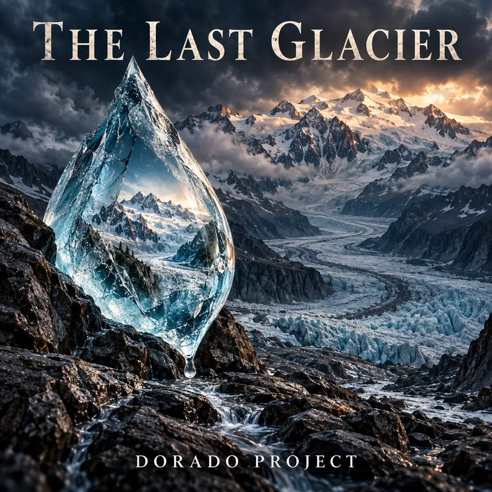

SINGLE · HARD ROCK BALLAD
The Last Glacier
Hard rock / Power ballad
An epic rock ballad inspired by Chamonix and the Mont Blanc glaciers: raw vocals, grand piano and soaring guitar solos carry the grief of melting ice and the hope that our grandchildren will still see a glacier. An idea shared by a friend, with one affectionate warning: don't lick the ice.
Listen on Spotify →